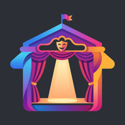
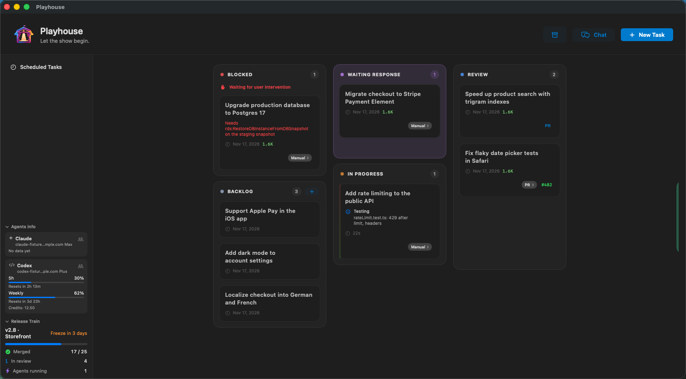
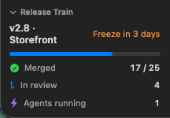
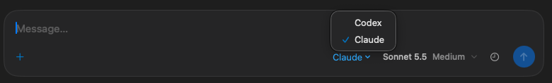

Task conversations
Each task is a conversation with an agent. When the work is done, the task moves to Review.

Playhouse GitHubNative macOS · Claude Code · Codex
Playhouse runs Claude Code and Codex tasks in parallel on your Mac. Each task works in its own Git worktrees, reports its progress and resource usage, and ends in a pull request for you to review.

Task status updates automatically as the agent works.
A task is not tied to one repository. Attach as many as the work needs, or none at all.
Plugins are JavaScript files that render as native SwiftUI and have access to app state and actions. Built-in features such as the pull request modes are implemented as plugins.
/ commands.function ReleaseTrain() {
var props = Playhouse.useProps();
var running = props.agents.runningTasks;
return h(Stack, { spacing: 6 },
h(Text, { weight: "bold" }, "v2.8 · Storefront"),
h(Meter, { fraction: 17 / 25 }),
h(Text, { color: "secondary" },
"Agents running: ",
String(running.claude + running.codex)));
}
Playhouse.render(h(ReleaseTrain));
Rendered as native SwiftUIEach task card shows the information you need to monitor and control its agent.
Each task is a conversation with an agent. When the work is done, the task moves to Review.
The Changes panel lists the files the agent edited, with a side-by-side diff for each. A terminal opens in the task's worktree.
Select text in a reply and ask a question about it. The side chat doesn't affect the main conversation or the agent's context.
When an agent needs a decision, the task moves to Waiting Response and shows the question.
Before a task moves to Review, its changes are committed and pushed. Each task's mode sets what happens next.
Choose a provider per task and switch during a conversation. The transcript carries over.

Run a task once at a set time, or hourly, daily, on weekdays or weekly.
Manage skills, rules and MCP servers for both providers.
Review a plan before the agent changes any code.
A conversation that isn't attached to a task.
App actions are also available through the bundled playhouse-cli.
Install the latest Apple Silicon release into /Applications:
curl -fsSL https://raw.githubusercontent.com/Niryo/Playhouse/master/scripts/install-release.sh | bash
gh, for pull requests